Тестове завдання
Тестове задання для COPYMIND
підготував
Ільховський Олександр
У цьому блоці фіксуємо конкурентне поле: кого можна віднести до прямих конкурентів COPYMIND, а хто закриває близький користувацький сценарій опосередковано через mental well-being, journaling, mindfulness або AI companionship.
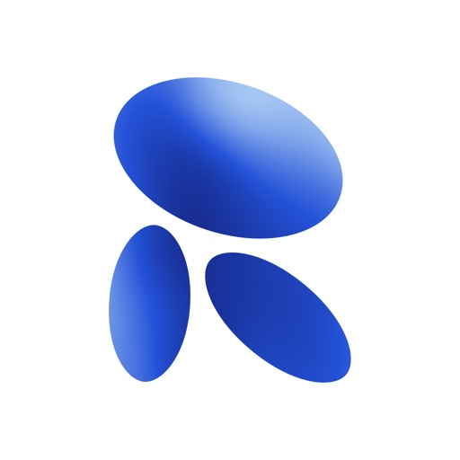
Займає Google-попит навколо AI companion, AI friend, AI chatbot, personal AI companion. У пошуковій видачі Google та Google Play / App Store продукт позиціонується як персональний AI-співрозмовник. У paid-комунікаціях Google використовує messaging навколо AI companion, спілкування, підтримки та в окремих креативах — практики мов.
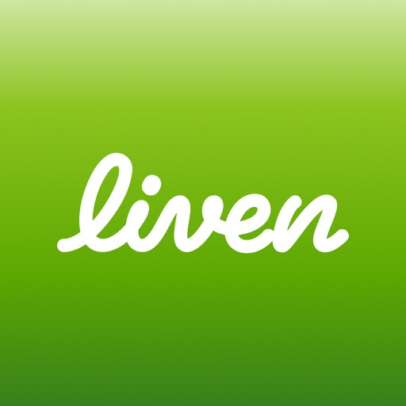
Покриває інтенти mental health, self-discovery, self-care, mood tracking, self companion. У Google Play / App Store продукт подається як застосунок для самопізнання, трекінгу стану та роботи з поведінковими патернами. У paid-комунікаціях використовує креативи навколо ADHD, hypersexuality, impulsivity, overthinking, emotional patterns і потреби краще зрозуміти себе.
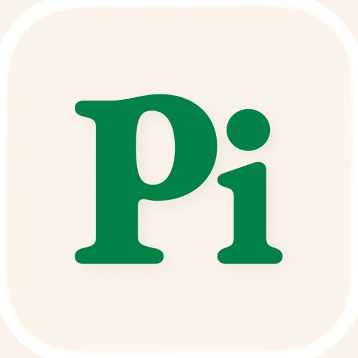
Займає напрям personal AI assistant / conversational AI. У пошуку Google продукт асоціюється з персональним AI для діалогу, порад, рефлексії та структурування думок. У paid-комунікаціях використовує теми overwhelmed, need to talk, reflection guide, clarity і допомоги у проговоренні ситуації з AI.
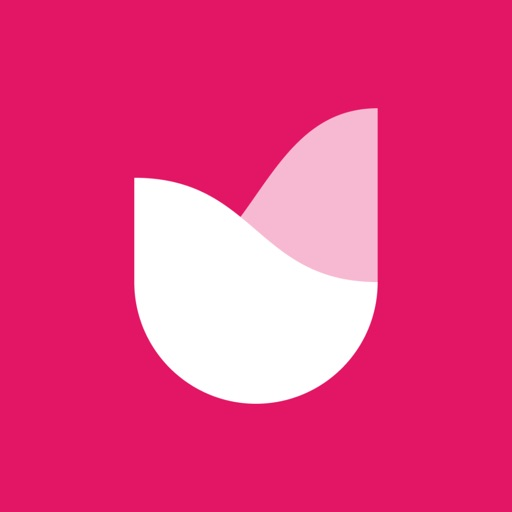
Покриває інтенти AI journal, AI diary, self-reflection app, self-care companion. У Google Play / App Store продукт чітко позиціонується як AI-щоденник для рефлексії, персональних інсайтів і personal growth. У paid-комунікаціях просуває ідею “reflect and grow” — AI-інструмент для саморозуміння, а не просто щоденник.
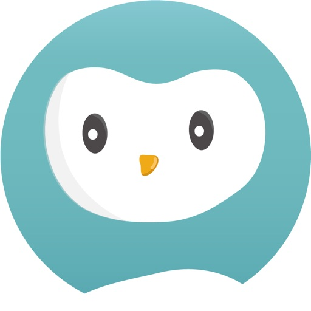
Займає кластер AI mental wellbeing chatbot, stress support, anxiety support, emotional support AI. У Google Play / App Store продукт позиціонується як AI-співрозмовник для емоційної підтримки з опорою на CBT-підходи. Для COPYMIND це прямий конкурент у mental well-being напрямі, але з більш терапевтичною комунікацією.
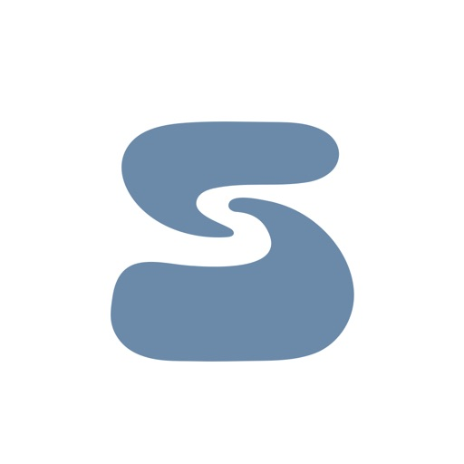
Позиціонується в Google Play / App Store як AI wellbeing coach, AI mental health assistant, emotional support AI. Перетинається з COPYMIND за семантикою приватної AI-розмови, рефлексії, mental well-being і personal growth. Важлива як менший, але точний конкурент у кластері AI-support.
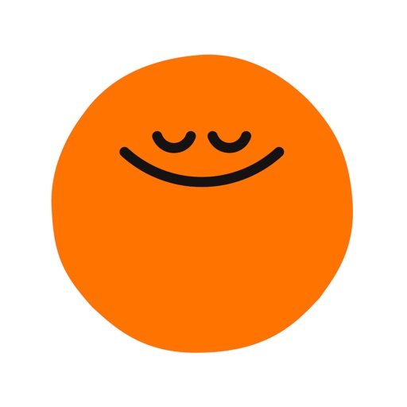
Займає широкий Google-попит за інтентами mental health app, meditation app, mindfulness, stress relief, sleep app. У пошуку Google, Google Play / App Store і paid-комунікаціях продукт продає mental well-being через медитації, сон, стрес і mindfulness-практики. Непрямий конкурент, бо закриває ту саму потребу в емоційній стабілізації, але не через AI Twin або AI-журнал.
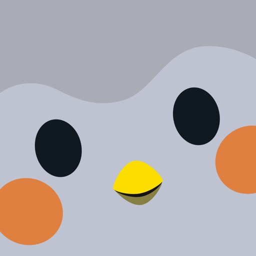
Сильний конкурент у напрямі self-care app, mood tracker, habit tracker, daily self-care, mental health tracker. У Google Play / App Store продукт позиціонується через гейміфікацію, трекінг настрою, звички та щоденну турботу про себе. Непрямий конкурент, бо забирає self-care попит без AI-співрозмовника як core-функції.
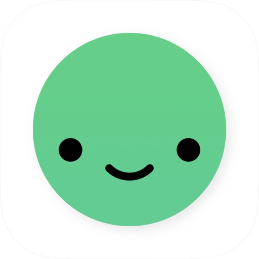
Покриває ASO-напрями mood tracker, journal app, diary app, habit tracker. Продукт не є AI-рішенням, але закриває близьку потребу: відстеження настрою, емоційних патернів, звичок і коротких записів. Непрямий конкурент для COPYMIND у кластері self-awareness і mood tracking.
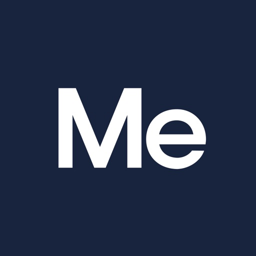
Працює з інтентами mental health app, mental well-being, meditation, relaxation, self-care у Google Play / App Store. Продукт не конкурує з COPYMIND як AI Twin або AI journal, але займає широкий wellbeing-попит навколо емоційного стану, релаксації та щоденної турботи про себе.
У paid-комунікаціях Google Replika робить акцент на AI companion / AI friend / AI romantic partner. Основні hooks: “AI Romantic Partner”, “Chat with AI Boyfriend”, “Create your personal AI friend”, “Always there to listen and talk”. Окремо тестує напрям AI for learning English, що розширює продукт від emotional companion до utility-use case.
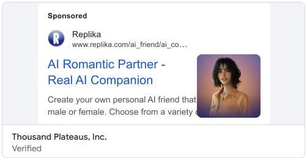
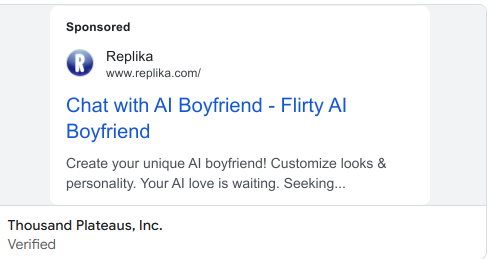
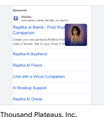
Liven активно використовує Search і візуальні paid-формати Google. У комунікації заходить не через загальне “mental health app”, а через конкретні болі: procrastination, ADHD, impulsivity, overthinking, emotional patterns. Часто веде користувача у quiz / assessment funnel з hooks на кшталт “Procrastination isn’t laziness” або “Identify your focus patterns”. Для COPYMIND це сильний приклад problem-first подачі.
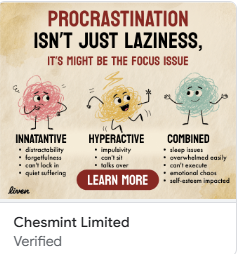
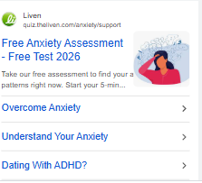
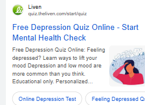
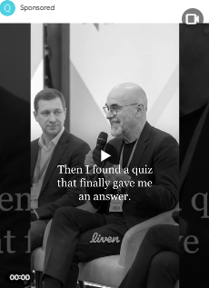
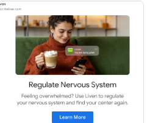
Finch використовує м’який, trust-based підхід. У visible ads продукт подає себе як self-care app для щоденної турботи про себе, healthy routines і neurodivergent minds. На відміну від Liven, Finch не тисне на гострі стани, а продає дружній і легкий формат self-care.
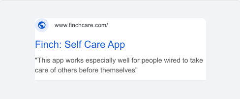
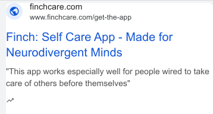
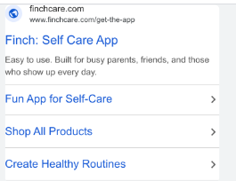
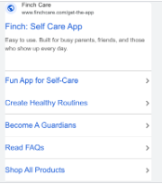
Pi просувається як personal AI, а не як вузький mental health app. Головний меседж — “Pi, your personal AI”, а комунікація будується навколо supportive AI that listens, helps think, plan and grow. Для COPYMIND це близький paid messaging, але продукт може відбудовуватись через AI Twin, пам’ять про патерни користувача та decision support.
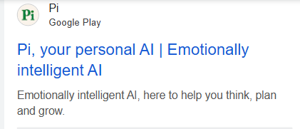
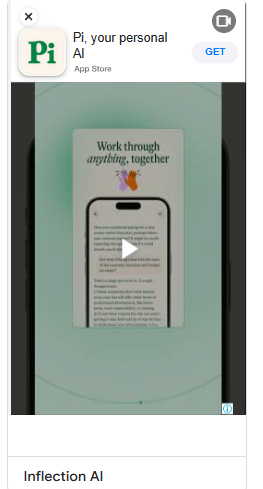
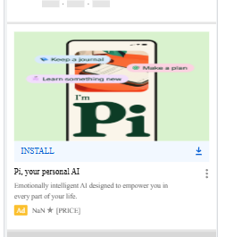
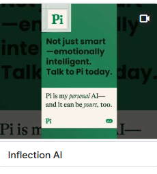
Rosebud просувається через AI journaling, self-reflection і personal growth. Основні hooks: “AI Journal for Personal Growth”, “Journal Anytime, Anyplace”, “Heal Through Journaling”, “From Chaos to Clarity”. CTA переважно веде на trial або install, а комунікація сфокусована на рефлексії та персональних інсайтах.
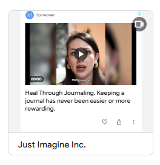
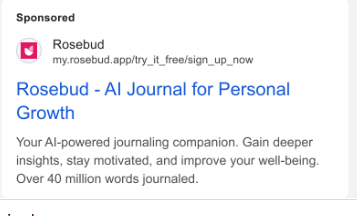
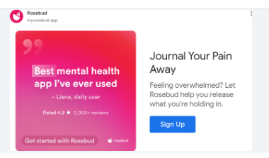
Headspace має одну з найширших paid-присутностей серед непрямих конкурентів. Messaging сфокусований на stress, sleep, mindfulness, anxiety та free trial, а основні формули звучать як “Try Headspace for Free”, “One App for Mental Health” і “Breathe deep, stress less”. Це не AI-конкурент напряму, але дуже сильний гравець на верхньому рівні mental-wellbeing попиту.
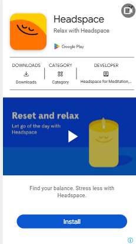
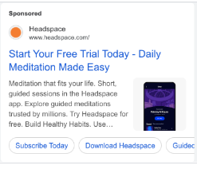
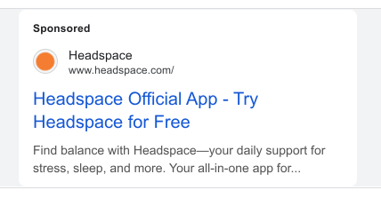
Messaging / офери
Hooks та CTA
Для COPYMIND найбільш релевантною виглядає логіка quiz-механіки, яку використовує Liven: вона знижує бар’єр входу, дає користувачу відчуття персоналізації ще до реєстрації та дозволяє заходити в комунікацію через конкретний стан або проблему. У paid-комунікації конкуренти загалом рідко продають просто “додаток” — вони продають overthinking, anxiety, procrastination, emotional chaos, lack of focus, need to talk або desire to understand yourself. Для COPYMIND це означає, що рекламну комунікацію варто будувати не тільки навколо “AI Twin”, а навколо зрозумілих user problems: “розібратися в думках”, “прийняти рішення”, “побачити свої патерни”, “отримати приватний простір для рефлексії”, “мати AI, який пам’ятає твій контекст”.
У креативах COPYMIND може відбудовуватися від конкурентів через ідею не просто “mental health app” або “AI chatbot”, а персонального AI Twin, який пам’ятає контекст користувача, допомагає бачити патерни, приймати рішення і щодня краще розуміти себе.
Стратегія запуску з урахуванням quiz landing: від першого кліку до проходження квізу, реєстрації, оплати та встановлення застосунку.
Більш точний для COPYMIND кластер: приватний простір для думок, рефлексії та розкладання внутрішнього хаосу без позиціонування як journal.
Теми для ключів
Тема для запуску через персонального AI-співрозмовника, який слухає, пам’ятає контекст і допомагає розібратися з думками.
Теми для ключів
Кластер для користувачів, яким складно приймати рішення, упорядковувати думки та знаходити ясність у перевантаженому стані.
Теми для ключів
Підхід через самопізнання, personal growth і пошук повторюваних патернів, які пояснюють реакції, емоції та поведінку.
Теми для ключів
Тема для креативів, де COPYMIND допомагає відслідковувати емоційні цикли, щоденний стан і повторювані thought patterns.
Теми для ключів
Вхід через м’який mental well-being angle: overthinking, stress reflection, приватна емоційна підтримка без жорсткої терапевтичної рамки.
Теми для ключів
Користувач із запиту AI journal має бачити квіз про рефлексію та персональні інсайти. Користувач із запиту AI companion — про персонального AI-співрозмовника. Користувач із запиту decision making app / overthinking — про ясність, рішення та структурування думок.
Якщо в оголошенні hook “Too many thoughts at once?”, то перший екран не має починатися з загального “Meet your AI Twin”. Краще: “Find out how your mind processes decisions” або “Discover what drives your overthinking patterns”.